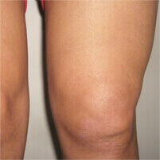
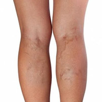

ผู้เชี่ยวชาญด้านโรคกระดูกประจำคลินิก ผู้เชี่ยวชาญด้านศัลยกรรมกระดูก
ครีมบำรุงรักษาข้อต่อ
ขจัดอาการปวดข้อต่อให้หายไปตลอดกาล ภายใน 30 วัน!
- เพิ่มประสิทธิภาพการทำงานของกระดูกอ่อนและฟื้นฟูข้อต่อ
- เข้าบำรุงรักษาตรงจุด เนื้อเยื้อกระดูกอ่อน กระดูกแข็ง น้ำไขข้อ และปลายกระดูก
- ขจัดอาการข้อต่ออักเสบ
- แทรกซึมเข้าถึง เอ็นหุ้มข้อ
อาการแบบไหนบ้างที่ Fortamin รักษาได้?
Fortamin ตัวช่วยอย่างดีสำหรับอาการข้อต่ออักเสบ
สูตรที่ผ่านการวิจัยและพัฒนามาอย่างต่อเนื่อง
ส่วนประกอบเป็นสารสกัดจากธรรมชาติทั้งหมด
และยังให้ผลลัพธ์อย่างมีประสิทธิภาพ
จากผลการวิจัยทางวิทยาศาสาตร์
Fortamin คือตัวช่วยสำหรับ:
โรคข้ออักเสบและโรคเกาต์

โรคข้อเสื่อม อาการปวดข้อต่อเรื้อรัง อาการกระดูกเสื่อม
โรครูมาตอยด์ ฟกช้ำ ขัดยอก ปวดตึงกล้ามเนื้อ และแพลง

หลอดเลือดดำอั
กเสบ และหลอดเลือดดำอุดตัน
Fortamin ไม่เพียงบรรเทาอาการ แต่ช่วยขจัดโรคไปจากคุณได้!
ครีมบำรุงรักษาข้อต่อ "Fortamin"
บรรเทาอาการปวดและฟื้นฟูการทำงานของข้อต่อ
ผลข้างเคียงของอาการข้อต่ออักเสบ

กระดูกผิดรูป
อาการปวดเรื้อรัง
อัมพาต
สูญเสียความสามารถในการเคลื่อนไหวร่างกาย
โรคที่เกี่ยวข้องกับอาการข้อต่ออักเสบ
| โรค | อาการ | ผลกระทบ |
|---|---|---|
| โรคข้ออักเสบ และ โรคข้อเสื่อม | รวมถึงอาการทั่วอย่างอากการปวดและการเคลื่อนไหวได้จำกัดโดยเฉพาะบริเวณข้อต่อ อาจมีอาการบวมแดงและมีไข้ร่วมด้วย | ข้อต่อผิดรูป เนื้อเยื่อกระดูกเสียหาย สูญเสียความสามารถในการเคลื่อนไหวอย่างสิ้นเชิง |
| ภาวะหมอนรองกระดูกหลังเสื่อม และ โรคกระดูกหิน | อาการชาเป็นพักๆ อาการปวดหลัง กระดูกสันหลัง และหน้าอก | กระดูกสันหลังเปราะ ไส้เลื่อน โรคหลอดเลือดผิดปกติ พิการ |
| โรคถุงลดเสียดสีอักเสบ | อาการบวมอักเสบของข้อต่อ ไม่สามารถเคลื่อนไหวบริเวณข้อต่อได้ เจ็บเมื่อสัมผัสบริเวณที่อักเสบ และมีอาการบวมแดง | เนื้อเยื่อกระดูกอักเสบ อาการติดเชื้อเป็นหนอง ติดเชื้อในกระแสเลือด สูญเสียความสามารถในการเคลื่อนไหวข้อต่อ |
| โรคเยื่อหุ้มข้ออักเสบ | เคลื่อนไหวแขนขาลำบาก อาการบวมและไม่สบายตัว เร่งอาการอักเสบและผิดรูปของข้อต่อ และอาจมีไข้ร่วมด้วย | ข้อต่อเสียหาย อัมพาต ติดเชื้อในกระแสเลือด นำไปสู่อาการร้ายแรงถึงชีวิต |
คำเตือน! รักษาโรค ไม่ใช่แค่รักษาอาการ
ป้องกันตัวคุณเองจากอาการไม่พึงประสงค์!
ใช้ Fortamin ภายใน 30 วัน แล้วคุณจะลืมไปเลยว่าเคยปวดข้อ!
สั่งซื้อ
Fortamin การันตี:
- ครอบคลุมในการรักษา
- รักษาการอักเสบของเนื้อเยื่อ
- บรรเทาอาการปวดได้ทันที
- แก้ปัญหาจากต้นเหตุ
- ฟื้นฟูเนื้อเยื่อ
- ป้องกันโรคข้อต่อและโรคกระดูก
การรักษาข้อต่ออักเสบอย่างผิดวิธี อาจนำไปสู่ผลลัพธ์ที่ยุ่งยากและเป็นอันตรายได้ เพื่อป้องกันตัวคุณเองจากอาการอัมพาตครึ่งตัวหรือทั้งตัว ควรเริ่มการรักษาโดยเร็วที่สุด!
คำแนะนำจากผู้เชี่ยวชาญ:
โดยปกติแล้วผู้ที่มีอาการปวดข้อมักจะเริ่มมองวิธีรักษาโรคเมื่ออาการอยู่ในระดับที่อันตรายต่อสุขภาพแล้ว ความผิดพลาดที่ร้ายแรงที่สุด คือ การไม่รับการรักษาแต่เนิ่นๆ
อีกสิ่งที่สำคัญ คือ การรักษาอย่างถูกวิธี โดยมากแล้วตัวยาที่ใช้กันมักมีผลแค่แก้ปวดเท่านั้น ผมขอแนะนำครีม Fortamin ตัวครีมที่ใบรับรองประสิทธิภาพจากการทดสอบโดยคลินิกวิทยาศาสตร์
ส่วนประกอบเฉพาะตัวที่มีประสิทธิภาพในการแทรกซึมเข้าถึงเนื้อเยื่อที่อักเสบและทำการรักษาได้ตรงจุด
ส่วนประกอบของ Fortamin เป็นสารสกัดจากธรรมชาติ จึงปลอดภัยต่อสตรีมีครรภ์และเด็กๆ
ประภาส เรืองชัย
ขจัดอาการปวด เคลื่อนไหวอย่างอิสระ มีความสุขกับชีวิตได้อย่างเต็มที่!
เริ่มการรักษาเลยตอนนี้
เพื่อ ชีวิต ที่คล่องแคล่ว !
เริ่มการรักษา
4 588 ความคิดเห็น:
คุณทาร่า
อายุ 39 ปี
คุณหมอตรวจเจอซีสต์รอบๆ หัวเข่าค่ะ คุณหมอบอกว่าแม้แต่การผ่าตัดก็ไม่ช่วยอะไร และก็ไม่มีทางรักษาได้เลย ก็เลยไปหาคนอื่นดูค่ะ คุณหมอคนนี้สั่ง Fortamin ให้สำหรับ 2 คอร์ส หลังจากครั้งแรกที่ใช้ก็รู้สึกดีขึ้นเลยค่ะ หลังจาก 7 วันที่ใช้อาการปวดก็หายเป็นปลิดทิ้ง ผ่านไป 6 เดือน ฉันกลับไปหาคุณหมออีกครั้ง ปรากฏว่าซีสต์หายไปแล้วค่ะ!
คุณวรพรรณ
อายุ 54 ปี
ดิฉันเคยหกล้มขาหักค่ะ ต้องนอนอยู่โรงพยาบาลนานทีเดียว ผลจากการขาหักในตอนนั้นทำให้ดิฉันมีอาการปวดข้อตามมาค่ะ แล้วก็ปวดมากจริงจนแทบจะทนไม่ไหวทุกครั้งที่เคลื่อนไหว ทรมานมากค่ะ จนดิฉันเริ่มใช้ Fortamin เพื่อการฟื้นฟูเนื้อเยื่อ แต่ปรากฏว่าอาการปวดบรรเทาลงค่ะ ก็หวังว่าอาการปวดจะหายแบบถาวรไปเลย
คุณนพพร
อายุ 57 ปี
ตอนที่ผมเริ่มมีอาการปวดหลังแรกๆ ก็ไม่ค่อยได้ใส่ใจมากครับ จนอาการหนักขึ้นเรื่อยๆ ผมซื้อ Fortamin และเริ่มทาที่หลังทุกวันตอนเย็น ผ่านไปหนึ่งสัปดาห์ ก็กลับมากระโดดโลดเต้นได้แล้วครับ!
ครีมบำรุงรักษาข้อต่อ
ขจัดอาการปวดข้อต่อให้หายไปตลอดกาล ภายใน 30 วัน!
มีความสุขกับชีวิตที่ ไร้ความเจ็บปวด
- เพิ่มประสิทธิภาพการทำงานของกระดูกอ่อนและฟื้นฟูข้อต่อ
- เข้าบำรุงรักษาตรงจุด เนื้อเยื้อกระดูกอ่อน กระดูกแข็ง น้ำไขข้อ และปลายกระดูก
- ขจัดอาการข้อต่ออักเสบ
- แทรกซึมเข้าถึงเอ็นหุ้มข้อ